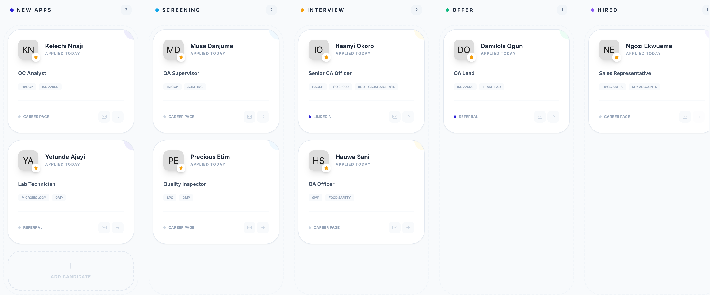
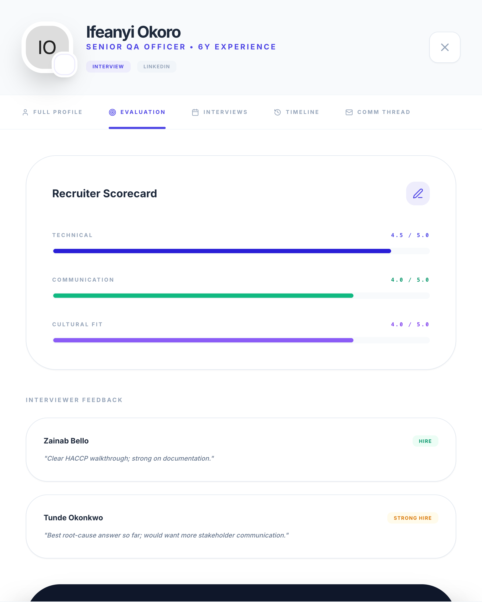
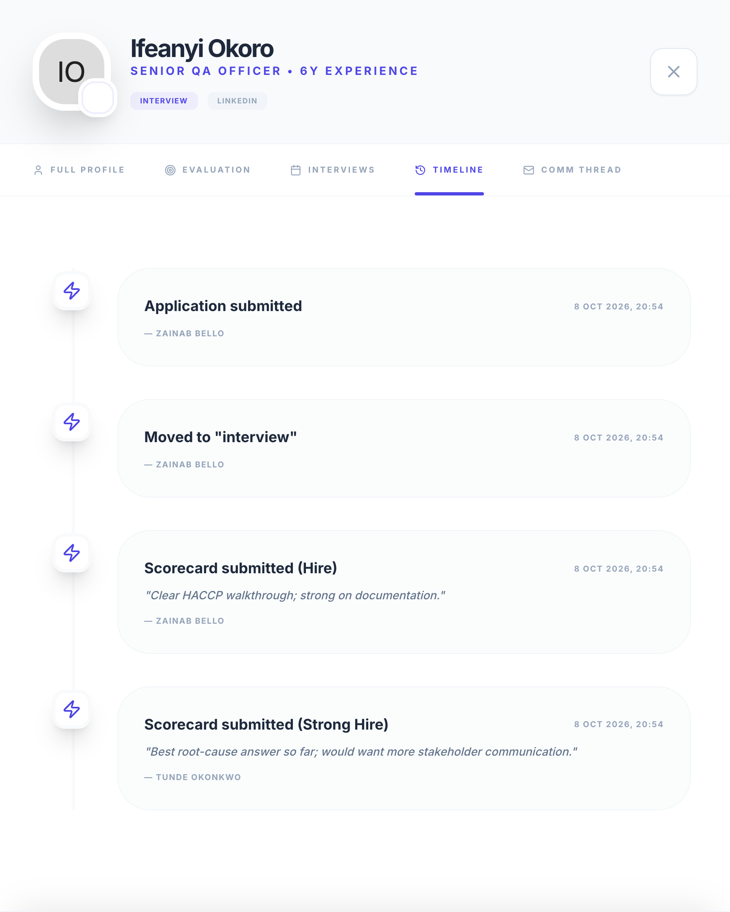

(a)
Recruitment pipeline board: candidates grouped by stage, from new applications through to hired

(b)
Candidate record, Evaluation tab: separate scorecards and recommendations from two interviewers

(c)
The same record, Timeline tab: stage moves and each scorecard, attributed and timestamped